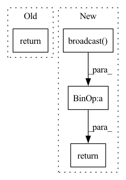

Pattern ID :33776
Before Change
return norm_x
w = self.weight.broadcast(x, [0,2,3])
b = self.bias.broadcast(x, [0,2,3])
return norm_x * w + b
class BatchNorm1d(Module):
def __init__(self, num_features, eps=1e-5, momentum=0.1, affine=None, is_train=True, sync=True):After Change
xvar = (x2mean-xmean*xmean).maximum(0.0)
w = self.weight / jt.sqrt(xvar+self.eps)
b = self.bias - xmean * w
norm_x = x * w.broadcast( x, dims) + b.broadcast(x, dims)
self.running_mean.update(self.running_mean +
(xmean.reshape((-1,)) - self.running_mean) * self.momentum)
self.running_var.update(self.running_var +
(xvar.reshape((-1,))-self.running_var)*self.momentum)
return norm_x
else:
w = self.weight / jt.sqrt(self.running_var+self.eps)
b = self.bias - self.running_mean * wIn pattern: SUPERPATTERN
Frequency: 3
Non-data size: 4
Instances Fragment ID: 97007304
Project Name: jittor/jittor
Commit Name: 79579b4a30434d43d79821469eb5501bf5a5063e
Time: 2020-11-25
Author: randonlang@gmail.com
File Name: python/jittor/nn.py
M Class Name: BatchNorm
N Class Name: BatchNorm
M Method Name: execute(2)
N Method Name: execute(2)
M Parent Class: Module
N Parent Class: Module
M File Name: python/jittor/nn.py
N File Name: python/jittor/nn.py
M Start Line: 351
M End Line: 371
N Start Line: 349
N End Line: 371
Before Change
def execute(self, x):
if self.is_depthwise_conv:
return depthwise_conv(x, self.weight, self.padding, self.dilation, self.stride)
elif self.groups == 1:
N,C,H,W = x.shape
Kh, Kw = self.kernel_sizeAfter Change
if self.is_depthwise_conv and jt.flags.use_cuda:
y = self.depthwise_conv(x, self.weight)
if self.bias is not None:
b = self.bias.broadcast( y.shape, [0,2,3])
y = y + b
return y
elif self.groups == 1:
N,C,H,W = x.shape
Kh, Kw = self.kernel_size Fragment ID: 97007305
Project Name: jittor/jittor
Commit Name: 895f6ecee295de8a87f1feafe521af7f5831eaf4
Time: 2020-12-07
Author: 498731903@qq.com
File Name: python/jittor/nn.py
M Class Name: Conv
N Class Name: Conv
M Method Name: execute(2)
N Method Name: execute(2)
M Parent Class: Module
N Parent Class: Module
M File Name: python/jittor/nn.py
N File Name: python/jittor/nn.py
M Start Line: 508
M End Line: 551
N Start Line: 509
N End Line: 556
Before Change
norm_x = numerator/denominator
if self.elementwise_affine:
norm_x = norm_x * self.weight+self.bias
return norm_x
class GroupNorm(Module):
def __init__(self, num_groups, num_channels, eps=1e-05, affine=True, is_train=True):After Change
xvar = (x2mean-xmean*xmean).maximum(0.0)
w = self.weight / jt.sqrt(xvar+self.eps)
b = self.bias - xmean * w
return x * w.broadcast( x, dims) + b.broadcast(x, dims)
LayerNorm2d = LayerNorm1d = LayerNorm
Fragment ID: 97007292
Project Name: jittor/jittor
Commit Name: 79579b4a30434d43d79821469eb5501bf5a5063e
Time: 2020-11-25
Author: randonlang@gmail.com
File Name: python/jittor/nn.py
M Class Name: LayerNorm
N Class Name: LayerNorm
M Method Name: execute(2)
N Method Name: execute(2)
M Parent Class: Module
N Parent Class: Module
M File Name: python/jittor/nn.py
N File Name: python/jittor/nn.py
M Start Line: 458
M End Line: 465
N Start Line: 410
N End Line: 417